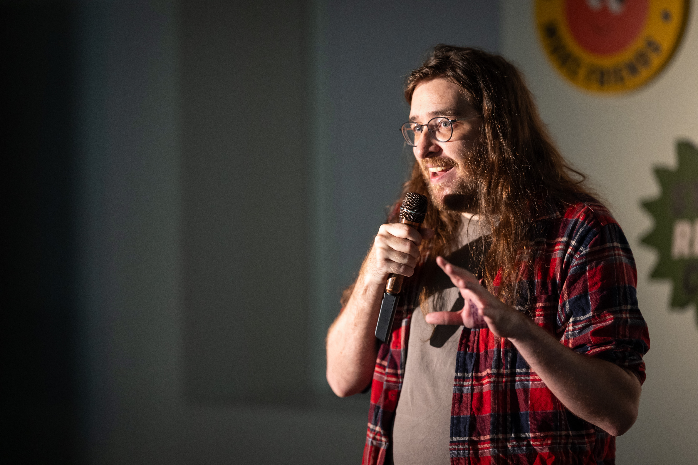
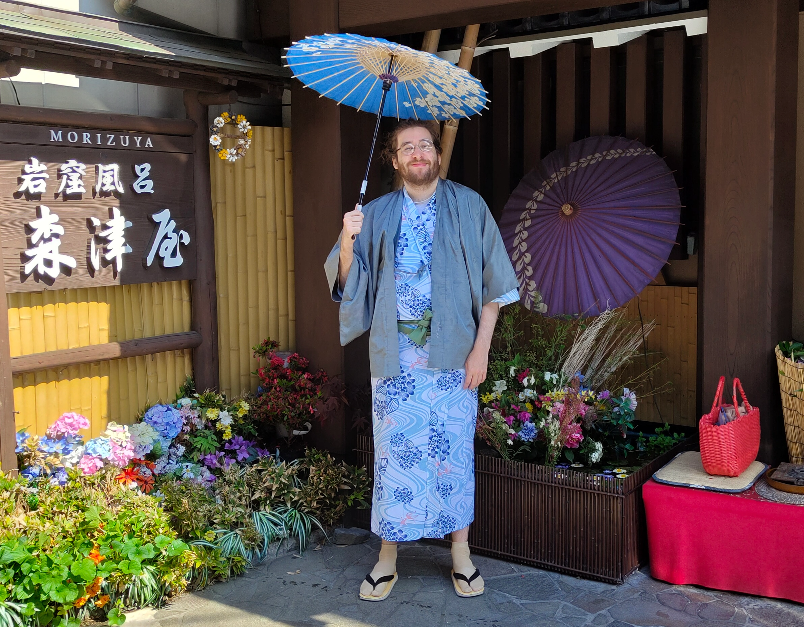

About Me
I am a highly motivated PhD candidate in Human-Computer Interaction with a strong foundation in computing and user experience design. My main research interest is exploring the accessibility of virtual reality with disabled people.
I hold a BSc in Computing and IT from the OU (2020), a MSc in User Experience Design from BCU (2022), and am currently working on completing a Computing PhD within the HCI Research Centre (opens in a new tab) at BCU. My PhD supervisors are Dr. Arthur Theil (director of studies), Dr. Sayan Sarcar, and Prof. Chris Creed.
See the project page for my PhD on the university website (opens in a new tab) or visit the university research blog (opens in a new tab) to read more about the project impact.


My mother was a disability specialist foster carer, so ever since I was young I've been interested in ensuring technology is accessible to everyone. I was also diagnosed with Asperger's Syndrome (Autism Spectrum Disorder), Dyslexia, and Dyspraxia (Developmental Coordination Disorder) as a kid, and have always been a passionate disability rights advocate.
Outside of research you'll probably find me at the cinema. Film is my biggest passion (add me on Letterboxd (opens in a new tab) if you want), I originally studied film production before moving over to computing & UX, so storytelling remains central to how I think. I love cooking and try to go for a run as often as possible to desperately (unsuccessfully) try to offset all the pizzas!
.png)